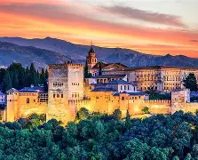
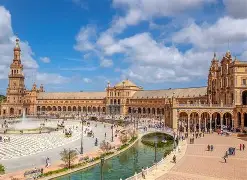
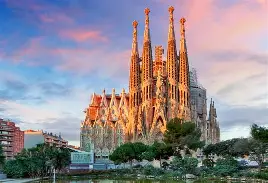

Cidades com Arquitetura e História Deslumbrantes
Granada
Granada: Principalmente por causa da Alhambra, um complexo palaciano e fortaleza mouro espetacular, rodeado pelos jardins do Generalife e com a Sierra Nevada ao fundo. A cidade é um verdadeiro mosaico cultural, onde se misturam influências árabes, cristãs e judaicas, visíveis em sua arquitetura, gastronomia e tradições. Caminhar pelo bairro de Albaicín, com suas ruas estreitas e casas caiadas, é como voltar no tempo, enquanto o bairro de Sacromonte revela as famosas casas-caverna e as autênticas apresentações de flamenco.
Sevilha
Conhecida pela sua arquitetura moura, com destaque para o Alcázar de Sevilha, um palácio real magnífico que combina estilos islâmicos e cristãos em um espetáculo de azulejos, pátios e jardins. A grandiosa Catedral de Sevilha, uma das maiores do mundo, guarda o túmulo de Cristóvão Colombo e impressiona pela sua imponência gótica. Ao lado dela ergue-se a Giralda, antigo minarete convertido em campanário, de onde se tem uma vista panorâmica inesquecível da cidade.
Barcelona
Famosa pela arquitetura modernista de Antoni Gaudí, a cidade abriga a Sagrada Família, uma basílica monumental ainda em construção, que se tornou símbolo de Barcelona. O Parque Güell, com suas formas orgânicas e mosaicos coloridos, é outro exemplo da genialidade de Gaudí e oferece vistas espetaculares da cidade. Além disso, a Casa Batlló e a Casa Milà (La Pedrera) são obras-primas modernistas que revelam a criatividade única do arquiteto. Barcelona também encanta com sua vida cosmopolita, o Bairro Gótico, as Ramblas cheias de movimento, e a proximidade com o mar Mediterrâneo, que dá à cidade uma atmosfera vibrante e descontraída.